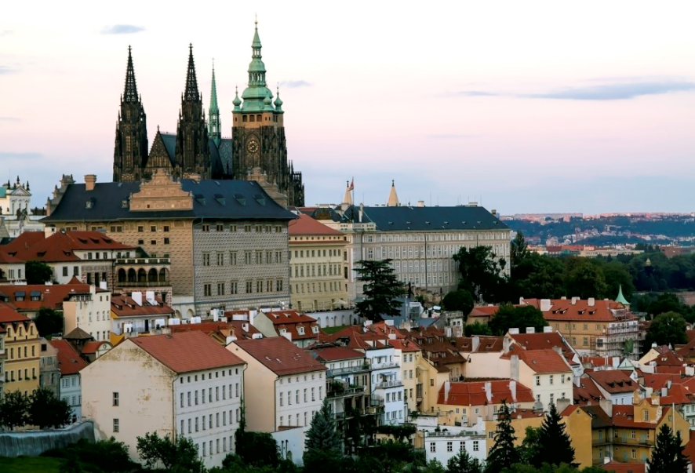
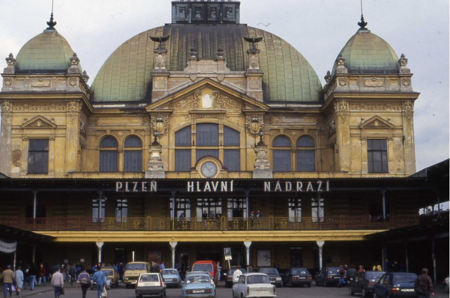
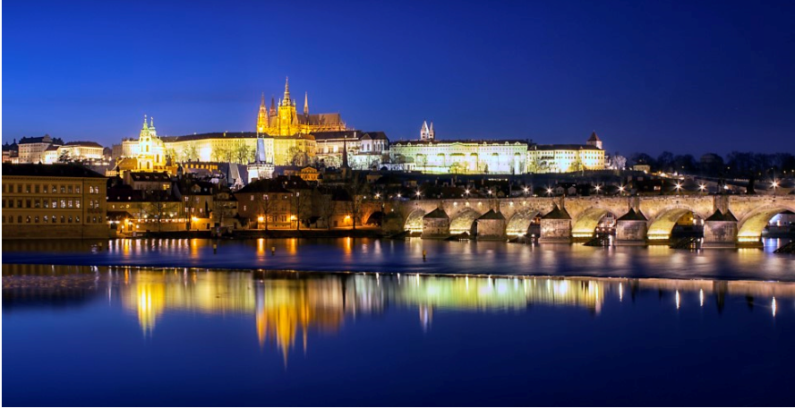
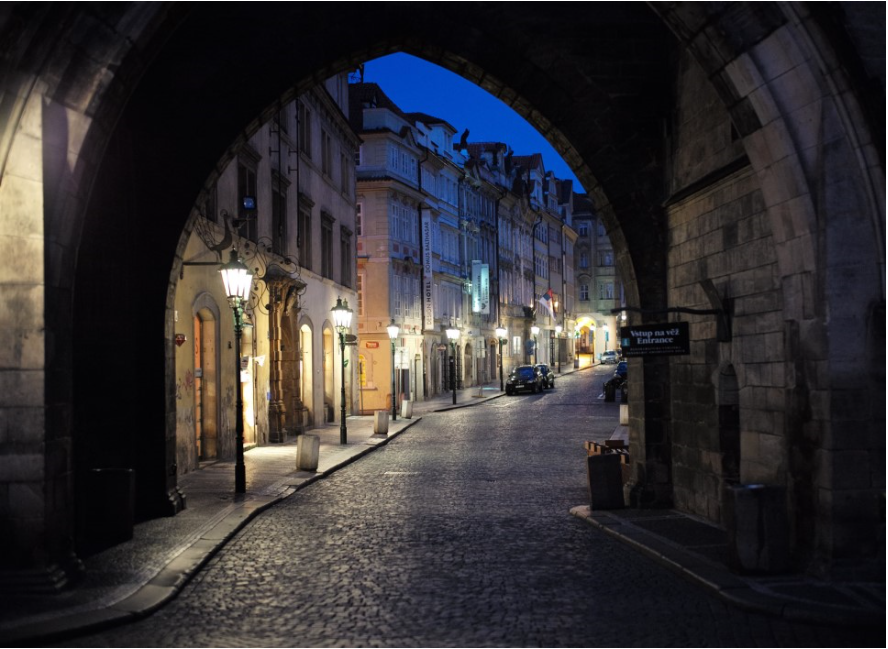

| 프라하의 풍경 | |
|---|---|
| 프라하 성 |  |
| 프라하 플젠 |  |
| 블타바 강 |  |
| 프라하의 밤 거리 |  |
| 준비물 | |
|---|---|
| 옷 | 겉옷 |
| 속옷 | |
| 잠옷 | |
| 여분 옷 | |
| 비상약 | 응급 처치약 |
| 종합 감기약 | |
| 소화제 | |
| 필수품 | 핸드폰 충전기 |
| 이어폰 | |
| 환전금 | |
| 여권 | |
| 체코를 여행하자! | ||
|---|---|---|
| DAY 1 | 프라하로 출발! | - am.10시 35분 인천에서 출발 - pm.2시 35분 런던 도착 pm. 4시 35분 런던 출발 - pm. 7시 30분 프라하 도착 |
| ＊프라하 까지는 직항이 없어 런던을 1회 경유합니다. | ||
| DAY 2 | 프라하 성을 구경하자! | 22번 트램을 탑승 후 프라하 성 정류장에서 내리거나,
지하철 A선Malostranka 역에서 하차 |
| ＊A, B, C코스로 각각 나뉘어져 요금도 다르다는 점 참고! | ||
| DAY 3 | 프라하 근교를 둘러보자! | 체코 크룸로프는 도시 전체가 유네스코 세계문화유산으로 지정된 체코 보헤미안 지방의 아름다운 소도시이다.
중세시대의 모습을 그대로 간직하고 있는 도시의 건물 대부분은 13-17세기 사이에 지어져 체코 여행중 가장 오래되고 이국적인 정취를 느낄 수 있다. |
| ＊프라하에서 이곳으로 가는 대중교통 수단은 버스와 기차가 있는데, 버스는 대략 3시간 가량 소요되며 한 번에 간다는 장점이 있지만, 주말에는 이용객이 많아 미리 예약을 하는 것이 좋다. |
||